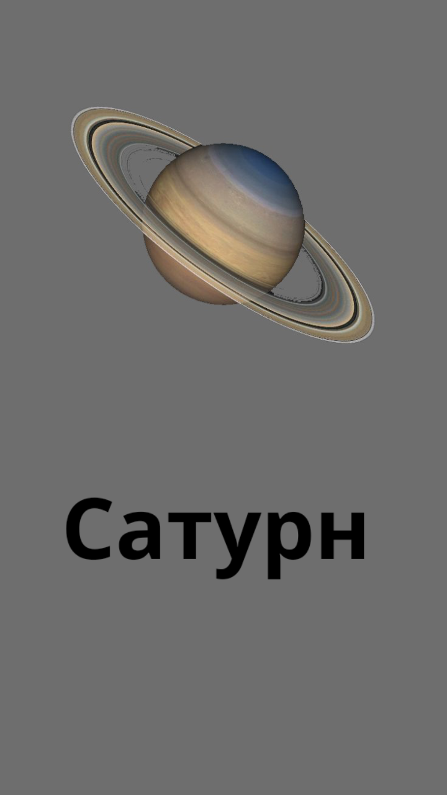

Меркурий — ближайшая к Солнцу планета и самая маленькая в Солнечной системе. Среднее расстояние до Солнца составляет 57 910 000 километров. Масса планеты — 3.3×10²³ кг, а диаметр — 4 880 км.
Из-за слабой атмосферы Меркурий испытывает резкие перепады температур. Днем поверхность нагревается до +430 °C, а ночью охлаждается до -180 °C. Планета практически не имеет атмосферы, состоящей из разреженного газа, что делает её уязвимой для солнечного ветра.
- Расстояние от Солнца: 57,9 млн. км.
- Диаметр планеты: 4878 км.
- Сутки на планете: 58 сут. 16 ч.
- Год на планете: 88 суток.
- Температура на поверхности: от -180°С до +440°С.
- Атмосфера: почти не присутствует.
- Спутники: не имеет.
Венера — вторая планета от Солнца и одна из самых похожих на Землю по размеру. Среднее расстояние до Солнца составляет 108 200 000 километров. Масса планеты — 4.87×10²⁴ кг, а диаметр — 12 104 км.
Из-за плотной атмосферы, состоящей в основном из углекислого газа, на планете возникает сильный парниковый эффект. Температура на поверхности достигает +470 °C. Атмосфера также содержит облака серной кислоты, что делает Венеру одной из самых негостеприимных планет.
- Расстояние от Солнца: 108,2 млн. км.
- Диаметр планеты: 12104 км.
- Сутки на планете: 243 суток.
- Год на планете: 225 суток.
- Температура на поверхности: около +470°C.
- Атмосфера: состоит в основном из углекислого газа.
- Спутники: не имеет.
Марс — четвёртая планета от Солнца, известная как "Красная планета" из-за большого содержания оксида железа на поверхности. Среднее расстояние до Солнца — 227 900 000 километров. Масса Марса составляет 6.42×10²³ кг, а диаметр — 6792 км.
Атмосфера Марса разрежена и состоит в основном из углекислого газа. На планете есть крупнейший вулкан в Солнечной системе — Олимп (высотой 22 км), а также огромный каньон — Долина Маринера.
- Расстояние от Солнца:227,9 млн км
- Диаметр планеты:6792 км
- Сутки на планете:24 часа 37 минут
- Год на планете:687 земных суток
- Температура на поверхности:от -153°C до +20°C
- Атмосфера:разреженная, углекислый газ
- Спутники:Фобос, Деймос
Юпитер — крупнейшая планета Солнечной системы, газовый гигант. Среднее расстояние до Солнца — 778 500 000 километров. Масса Юпитера — 1.90×10²⁷ кг, а диаметр — 139 820 км.
Планета состоит в основном из водорода и гелия, в её атмосфере наблюдаются мощные ураганы, в том числе Большое Красное Пятно. Юпитер обладает сильным магнитным полем и большой системой спутников.
- Расстояние от Солнца:778,5 млн км
- Диаметр планеты:139 820 км
- Сутки на планете:9 часов 56 минут
- Год на планете:11,9 земных лет
- Температура на поверхности:около -145°C
- Атмосфера:водород, гелий
- Спутники:более 90 (включая Ио, Европу, Ганимед)

Сатурн — вторая по величине планета Солнечной системы и самый известный газовый гигант благодаря своим кольцам. Среднее расстояние до Солнца — 1 429 400 000 километров. Масса планеты — 5.68×10²⁶ кг, а диаметр — 116 460 км.
Кольца Сатурна состоят изо льда и камней. В атмосфере планеты преобладают водород и гелий, а скорость ветров достигает 1800 км/ч.
- Расстояние от Солнца: 1,429 млрд км
- Диаметр планеты: 116 460 км
- Сутки на планете:10 часов 33 минуты
- Год на планете:29,5 земных лет
- Температура на поверхности:около -178°C
- Атмосфера:водород, гелий
- Спутники:более 80 (включая Титан, Энцелад)
Уран — ледяной гигант, седьмая планета от Солнца, вращается на боку. Среднее расстояние до Солнца — 2 870 990 000 километров. Масса Урана — 8.68×10²⁵ кг, а диаметр — 50 724 км.
Планета имеет слабую систему колец и уникальный состав атмосферы, который придаёт ей голубоватый цвет.
- Расстояние от Солнца: 2,87 млрд км
- Диаметр планеты: 50 724 км
- Сутки на планете:17 часов 14 минут
- Год на планете: 84 земных года
- Температура на поверхности:около -224°C
- Атмосфера:водород, гелий, метан
- Спутники:27 (включая Умбриэль, Ариэль,Миранду)
Нептун — восьмая и самая дальняя планета Солнечной системы. Среднее расстояние до Солнца — 4 498 400 000 километров. Масса планеты — 1.02×10²⁶ кг, а диаметр — 49 244 км.
На Нептуне бушуют самые сильные ветры в Солнечной системе, достигающие 2100 км/ч. Атмосфера содержит метан, который придаёт планете синий оттенок.
- Расстояние от Солнца:4,498 млрд км
- Диаметр планеты: 49 244 км
- Сутки на планете:16 часов 6 минут
- Год на планете:165 земных лет
- Температура на поверхности: около -218°C
- Атмосфера:водород, гелий, метан
- Спутники:14 (включая Тритон)